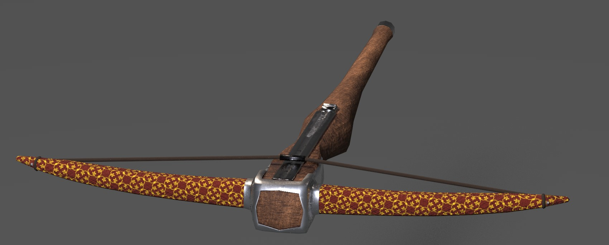
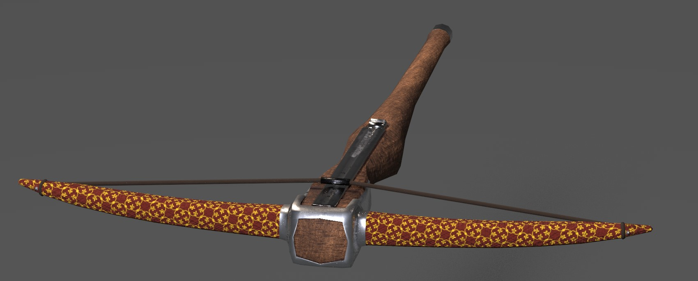
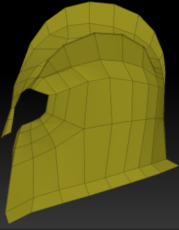
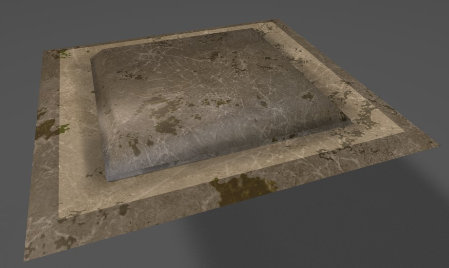

My Job
My work in this project was mainly to create the 3D elements of the player. After the player period I focused on the creation of Scenario of the different levels that exist in the game. The creation of 3D content ranges from modeling, sculpting and texturing
Player
The player was one of the first things that I started doing, for this game I only had to do the arms because he is the first person. Although it is simpler than the scenario, the level of detail must be greater.
Jaime Lannister
The arm of Jaime I must say that the model is not mine, was modeled by my partner Gerard Gil, who was mainly responsible for the character department. I took care of the texturing. Jaime was my first texturized in Substance painter and the results achieved were quite good. these arms make up two different arms since in one it has an iron glove and in the other hand a current one.
Daenerys Targaryen
Daenerys' arms were trying to simulate a leather outfit. It was modeled mainly in 3Ds Max, sculpts the wrinkles of the clothes in Zbrush and texturize in Substance Painter. Try to make the texture look like a reptile skin, fire-repellent

Theon Greyjoy
Theon Greyjoy were simple arms, the biggest challenge was the texturing. Like Deneris, I incised in 3Ds max, in Zbrush I modeled the wrinkles of the clothes, the gloves and the details of the shoulder pad, finally I texturized in Substance Painter
Crossbow
The lion head was an idea that we mainly had as secondary because we believed that there were more important things first, but the truth was a fairly simple work and did not mean an obstacle to meet the other objectives.
To start the head I sculpted it from scratch in Zbrush based on references, then I reduced the polygons with a decimation-master and to texture it I used Substance Painter.
 

Enviroment
The scenario was the department that i had the most time working, corresponding to the last two milestones. In this department I was responsible for making the main assets of the levels, such as walls, arcs and their textures. In addition to these elements I was also in charge of creating assets such as the fountains or the iron throne. Below is a list of the most important
- Arcs (lvl 1 & 2)
- Doors
- Grids
- Iron Throne
- Stairs
- Fountains
- Lion Heads
- Press Plate
- Press Plate Blocks
- Column (not Implemented)
Iron Throne
The iron throne is one of the assets of which I feel most proud, I feel that despite having been very hard, the result has been what I wanted.
To create it I took 3 swords already created by my partner Gerard Gil and he believes 3 more; with these 6 swords as a base I began to mold the throne, in addition to a flat sword for most of the throne, All this with the help of Zbrush to sculpt it. Then I created the Low-Poly version, leaving it in 650 polygons. To finish, I created the texture maps and texturized them using Substance Painter.
Lion Head
The lion head was an idea that we mainly had as secondary because we believed that there were more important things first, but the truth was a fairly simple work and did not mean an obstacle to meet the other objectives.
To start the head I sculpted it from scratch in Zbrush based on references, then I reduced the polygons with a decimation-master and to texture it I used Substance Painter.

Fountain
The fountain was a mixture of traditional modeling with Zbrush sculpting. I started defining the base shape in 3Ds Max, then I exported it to Zbrush and with shield references of the houses of Game of Thrones I used the options of the alphas to sculpt it in the source. The result has been quite satisfactory
Doors
The doors were assets of several iterations, we started with different types, but in the end we opted for the last two, the bar and the head of the lion for visual and aesthetic.
To create them I adopted the base form of the arch that I previously created, and complete the door form. The most complicated thing in this model was to adapt the textures so that they fit together smoothly because it was my first piece in which I worked with UV maps. The texture maps are the same ones used for the rest of the walls of the map.
Material
The sand material was the first material I designed from scratch. I created it for the beach area. To create it, I used Substance Designer, an Allegorithmic tool in which you can create materials and then use them in Substance painter. I used a series of tutorials to familiarize myself with the software. For me it was an incredible experience and helped me understand how PBR materials work.

Others


